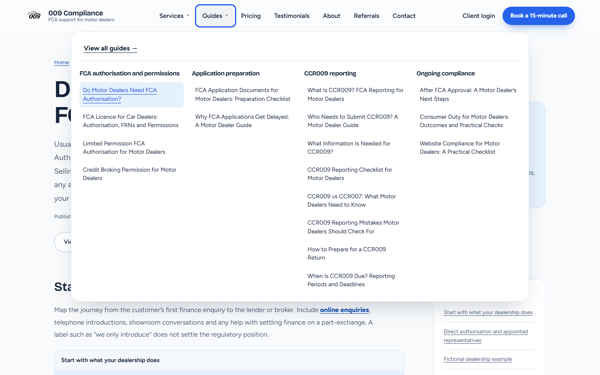
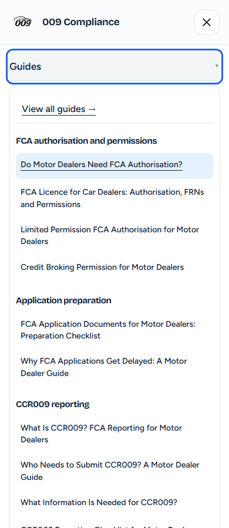
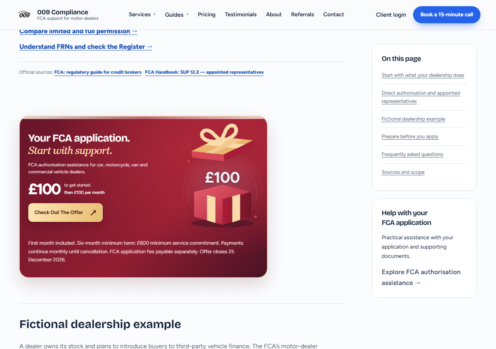
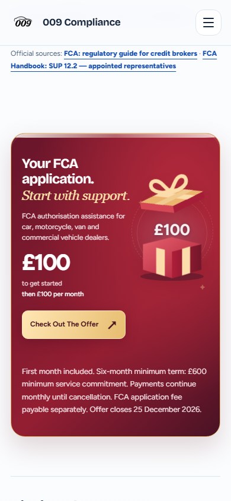
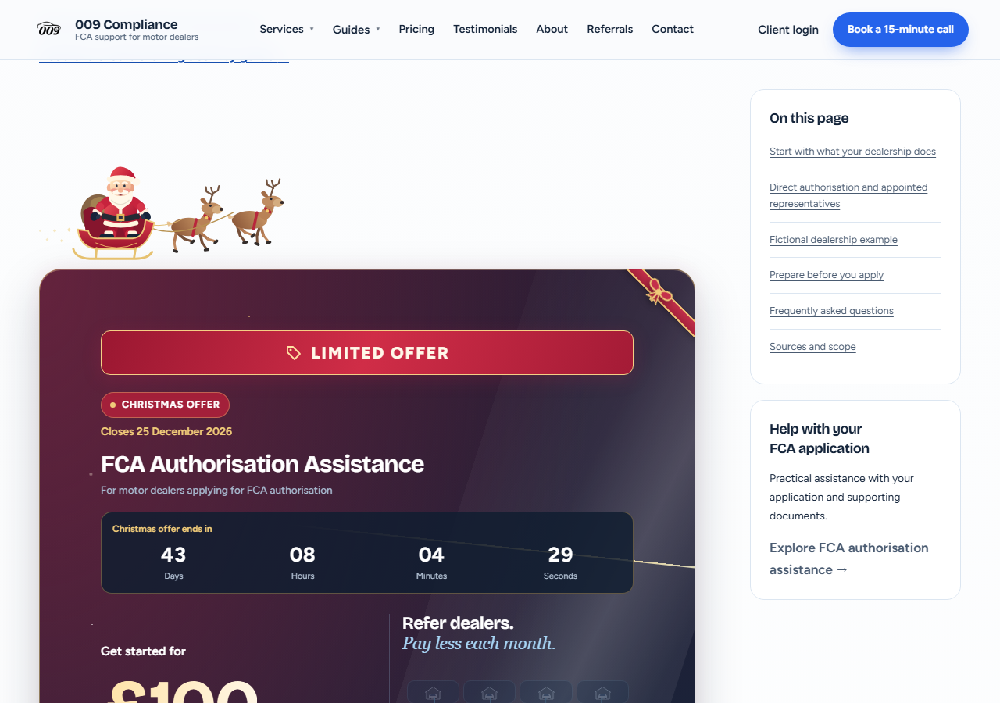
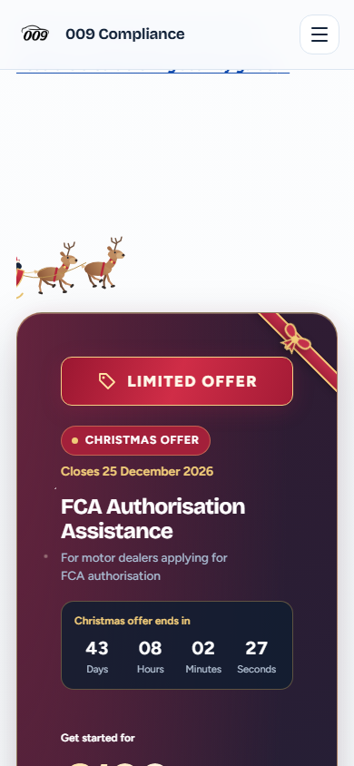
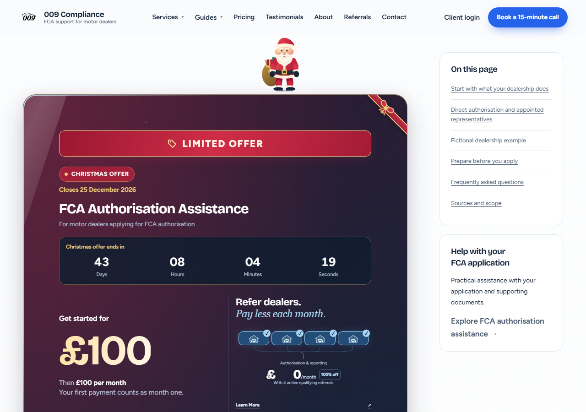
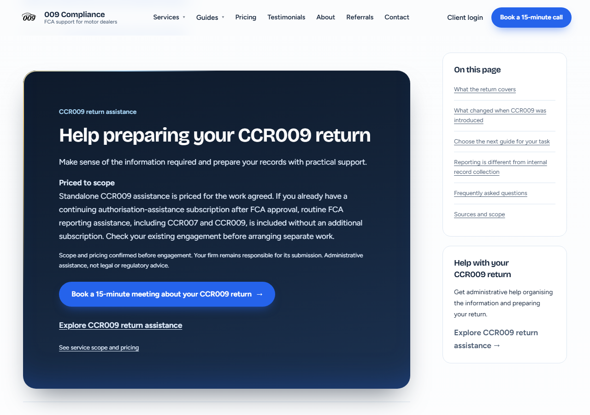
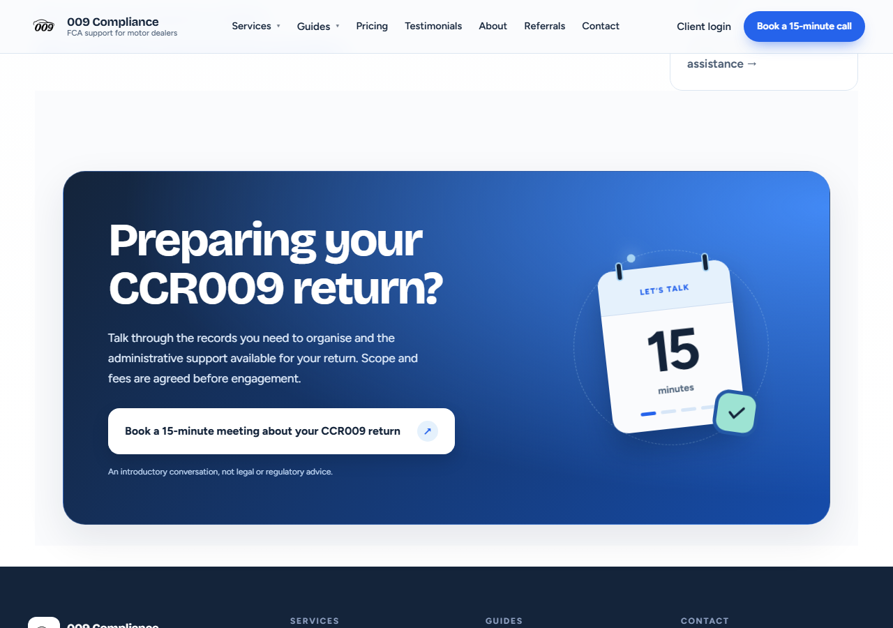

Local review, 12 November 2026. Not committed, pushed or deployed. This report describes the focused navigation/animation work, separately from the guide improvements already present at its start.
Preview server: http://127.0.0.1:3100/. Emails, reminders, Sheets sync and real booking writes are disabled. No real booking was submitted. VAT treatment and a specific cancellation notice period remain unconfirmed in the existing configuration; neither was invented.
views/partials/home_gift_offer.ejs and reused on six FCA guides. The original van, Santa throw, gift lid and price reveal use the existing home-offer and home-christmas-van assets. The homepage’s rendered main content is unchanged after normalising whitespace and asset fingerprints.views/partials/offer_card.ejs component with santa.ejs, referral_animation.ejs, christmas-arrival.js and auth-referral-animation.js. In the current repository, this full presentation was on the FCA service page, rather than the homepage itself. Its original artwork and motion are reused with guide-specific copy and layout.views/partials/guide_booking.ejs and public/js/auth-final-cta.js remain unchanged. CCR009 and ongoing-support sections remain relevant to their topics. The generic arrow decoration has been removed.The gift teaser and full FCA offer have educational sections between them. One closing calendar CTA follows the FAQs, sources and related guides. Existing sidebar service links remain. These are conversion changes, not claims of direct ranking improvement.
| Existing destination | Final placement |
|---|---|
Do Motor Dealers Need FCA Authorisation?/do-motor-dealers-need-fca-authorisation | Original gift card after educational section 2; “Check Out The Offer” scrolls to the original full Santa/referral offer after the last educational section. Original calendar booking CTA closes the page. |
FCA Licence for Car Dealers: Authorisation, FRNs and Permissions/fca-licence-car-dealers | Original gift card after educational section 2; “Check Out The Offer” scrolls to the original full Santa/referral offer after the last educational section. Original calendar booking CTA closes the page. |
Limited Permission FCA Authorisation for Motor Dealers/limited-permission-fca-authorisation-motor-dealers | Original gift card after educational section 2; “Check Out The Offer” scrolls to the original full Santa/referral offer after the last educational section. Original calendar booking CTA closes the page. |
Credit Broking Permission for Motor Dealers/credit-broking-permission-motor-dealers | Original gift card after educational section 2; “Check Out The Offer” scrolls to the original full Santa/referral offer after the last educational section. Original calendar booking CTA closes the page. |
FCA Application Documents for Motor Dealers: Preparation Checklist/fca-application-documents-motor-dealers | Original gift card after educational section 2; “Check Out The Offer” scrolls to the original full Santa/referral offer after the last educational section. Original calendar booking CTA closes the page. |
Why FCA Applications Get Delayed: A Motor Dealer Guide/why-fca-applications-get-delayed | Original gift card after educational section 2; “Check Out The Offer” scrolls to the original full Santa/referral offer after the last educational section. Original calendar booking CTA closes the page. |
After FCA Approval: A Motor Dealer’s Next Steps/after-fca-approval-motor-dealers | Existing ongoing administrative-support section and original calendar booking CTA retained. No FCA application offer. |
What Is CCR009? FCA Reporting for Motor Dealers/what-is-ccr009 | Existing CCR009 assistance section retained after the final educational section, with standalone scope-based pricing distinguished from an existing continuing subscription. Original calendar booking CTA retained. No FCA application offer. |
Who Needs to Submit CCR009? A Motor Dealer Guide/who-needs-to-submit-ccr009 | Existing CCR009 assistance section retained after the final educational section, with standalone scope-based pricing distinguished from an existing continuing subscription. Original calendar booking CTA retained. No FCA application offer. |
What Information Is Needed for CCR009?/what-information-is-needed-for-ccr009 | Existing CCR009 assistance section retained after the final educational section, with standalone scope-based pricing distinguished from an existing continuing subscription. Original calendar booking CTA retained. No FCA application offer. |
CCR009 Reporting Checklist for Motor Dealers/ccr009-reporting-checklist-motor-dealers | Existing CCR009 assistance section retained after the final educational section, with standalone scope-based pricing distinguished from an existing continuing subscription. Original calendar booking CTA retained. No FCA application offer. |
CCR009 vs CCR007: What Motor Dealers Need to Know/ccr009-vs-ccr007 | Existing CCR009 assistance section retained after the final educational section, with standalone scope-based pricing distinguished from an existing continuing subscription. Original calendar booking CTA retained. No FCA application offer. |
CCR009 Reporting Mistakes Motor Dealers Should Check For/common-ccr009-reporting-mistakes | Existing CCR009 assistance section retained after the final educational section, with standalone scope-based pricing distinguished from an existing continuing subscription. Original calendar booking CTA retained. No FCA application offer. |
How to Prepare for a CCR009 Return/how-to-prepare-for-ccr009-return | Existing CCR009 assistance section retained after the final educational section, with standalone scope-based pricing distinguished from an existing continuing subscription. Original calendar booking CTA retained. No FCA application offer. |
When Is CCR009 Due? Reporting Periods and Deadlines/when-is-ccr009-due | Existing CCR009 assistance section retained after the final educational section, with standalone scope-based pricing distinguished from an existing continuing subscription. Original calendar booking CTA retained. No FCA application offer. |
Consumer Duty for Motor Dealers: Outcomes and Practical Checks/consumer-duty-motor-dealers | Existing ongoing administrative-support section and original calendar booking CTA retained. No FCA application offer. |
Website Compliance for Motor Dealers: A Practical Checklist/website-compliance-motor-dealers | Existing ongoing administrative-support section and original calendar booking CTA retained. No FCA application offer. |
FCA Compliance for Motor Dealers: Guides and Next Steps/fca-compliance-motor-dealers-guide | Existing ongoing administrative-support section and original calendar booking CTA retained. No FCA application offer. |
All displayed prices and payment qualifications use the unchanged config/offer.js, config/campaign.js and config/referral.js. The current configuration approves £100 as month one, then £100 monthly, with a six-month minimum and £600 minimum service commitment before applicable referral adjustments; FCA fees are separate. The full guide card displays the payment explanation, continuation and referral qualifications nearby. It does not copy the older service-card “6–12 months” timing statement.
The campaign expires at 00:00 UTC on 26 December 2026. Its currently configured post-campaign mode is continue: the approved pricing remains, with non-seasonal presentation. Tests also covered unconfirmed and custom post-campaign modes: price-bearing offer content and the payment explanation are absent. In all three modes, an already-open guide replaces its expired seasonal presentation without reloading. Current active-campaign pricing remains governed by the existing campaign logic; no confirmation control was overridden.
The source hashes for guide content, guide metadata, contextual-link definitions, offer/campaign/referral configuration, and the booking component/controller match the task-start snapshot. Browser comparisons verified identical educational sections, answers, FAQs, sources, dates, related links, breadcrumbs, JSON-LD and contextual links on every guide. Titles, descriptions, H1s, canonicals and indexability also passed. Established URLs, sitemap and robots configuration were not changed. The new server-rendered header links improve discovery and navigation; no ranking or CTR outcome is claimed.
Five cold runs per variant for each of three representative guides; 30 final runs, alternating before/after. Chromium 145.0.7632.6, 390 × 844 viewport, 4× CPU slowdown, 150ms latency, 1.6Mbps download, 750kbps upload. Saved task-start and final HTML were replayed through the same local gzip server with their matching fingerprinted assets. External requests were blocked. Three seconds of observation at the page top, followed by scrolling to the closing calendar and 1.5 seconds of observation.
| Page / variant | Median FCP | Median LCP | Median CLS | Observed blocking | Initial requests | Initial encoded payload |
|---|---|---|---|---|---|---|
| /do-motor-dealers-need-fca-authorisation before | 992 ms | 1208 ms | 0.0000 | 176 ms | 16 | 159.0 KiB |
| /do-motor-dealers-need-fca-authorisation after | 992 ms | 1388 ms | 0.0000 | 360 ms | 16 | 176.4 KiB |
| /what-is-ccr009 before | 996 ms | 1212 ms | 0.0000 | 169 ms | 16 | 158.3 KiB |
| /what-is-ccr009 after | 1008 ms | 1224 ms | 0.0000 | 159 ms | 16 | 159.5 KiB |
| /consumer-duty-motor-dealers before | 972 ms | 1208 ms | 0.0000 | 155 ms | 16 | 158.5 KiB |
| /consumer-duty-motor-dealers after | 992 ms | 1204 ms | 0.0000 | 152 ms | 16 | 159.8 KiB |
These are lab measurements, not field Core Web Vitals or Lighthouse scores. The observed blocking sum is not Lighthouse TBT; no INP result is claimed. Production CDN/network behavior and real devices were not measured. The independent full FCA animation run recorded CLS 0; the unchanged homepage recorded 0.0013 in that run. No claim of zero layout shifts across all possible sessions is made.
The fuller FCA presentation has a measurable cost: median LCP changed from 1.21 to 1.39 seconds, observed long-task blocking from 176 to 360 ms under 4× CPU slowdown, and the initial encoded payload increased by 17.4 KiB. Combining styles and loading animation code near the offer reduced the initial loading cost. This does not establish a field Core Web Vitals result or guarantee identical performance on slower devices. The table reports the remaining difference rather than describing it as no regression.
Images are still frames from the tested pages; the live links above show the actual sequences. Reload a guide to replay its one-visit animation.









Keep npm run dev running, then use:
npm run build npm test node scripts/guide-navigation-browser.cjs node scripts/guide-navigation-campaign.cjs node scripts/guide-navigation-mobile-motion.cjs node scripts/guide-navigation-performance.cjs node scripts/guide-navigation-report.cjs
The browser scripts use the existing local Playwright/Chromium installation; no package was added. Run the performance script by itself, without concurrent browser/test workloads. The in-app browser bridge failed during connection with a sandboxPolicy metadata error, so checks used this repository’s existing Playwright fallback. Testing was Chromium with viewport/touch emulation, not physical iOS/Android devices or Safari/Firefox.
Evidence: route/navigation and preservation results, campaign states, mobile motion and fallbacks, all final lab runs. Task-start source and rendered snapshots are retained beside this report. Unrelated pre-existing working-tree changes were preserved. No commit, push, deployment or indexing request was made.